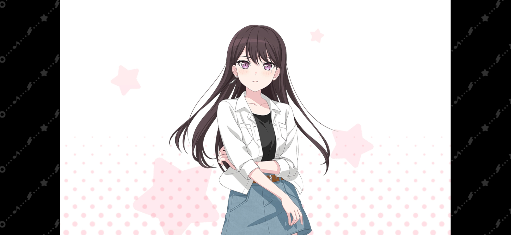

| 圖片 | 姓名 | 擔當 | 聲優 | 生日 | 身高 | 簡介 |
|---|---|---|---|---|---|---|
| 高松燈 | 主唱 | 羊宮妃那 | 11月22日 | 155cm | 羽丘女子學園高中一年級學生，天文部唯一社員。 先後擔任過CRYCHIC和MyGO!!!!!的主唱。 性格略悲觀的女孩。 感情細膩，有著自己獨特的內心世界。 容易感到寂寞，常會稱自己「感受著孤獨」。 對人際關係極為敏感，時刻擔心著自己的言行是否會產生不良影響。 雖然自認不是那麼擅長唱歌，但仍會努力去唱。 |
|
| 千早愛音 | 吉他手 | 立石凜 | 9月8日 | 160cm | MyGO!!!!!的吉他手，羽丘女子學園高中一年級學生。 成績優秀，精力充沛，品學兼優的優等生，且具備相當的交流力和行動力，初中時代就在班裡極具人氣，並且擔任學生會長。 雖然有點愛慕虛榮和想出風頭，但個性積極善良，關心他人，心思細膩，會為了朋友挺身而出。 喜歡趕時髦所以常常會忍不住入手流行的東西。 |
|
| 要樂奈 | 主音吉他手 | 青木陽菜 | 2月22日 | 150cm | MyGO!!!!!的吉他手，花咲川女子學園初中三年級學生，在LIVE HOUSE「RiNG」裡神出鬼沒的古怪女孩，因為覺得樂隊很有趣所以加入了樂隊。 有著像是貓一般捉摸不透的個性，總是按照自己的步調行動。 喜歡的食物是抹茶和蕎麥麵，不喜歡韭菜和山藥泥。 有著高超的吉他技術，僅一眼就能記住樂譜並演奏，但隨性而為的作風有時也會令樂隊的成員們頭疼。 愛好是和貓玩，本人也是相當的貓系少女，甚至生日也是「貓の日」2月22日。 |
|
| 長崎爽世 | 貝斯 | 小日向美香 | 5月27日 | 162cm | 月之森女子學園高中一年級學生，在吹奏樂部司職低音提琴，並先後擔任過樂隊CRYCHIC和MyGO!!!!!的貝斯手。 CRYCHIC時期使用指彈，MyGO!!!!!時期大多使用撥片。 如同具有安穩氣氛的大姐姐一般的存在，經常被周圍的人所依賴，不過在和MyGO!!!!!隊友在一起的時候會露出平時不會示人的那一面。 思考事情和慌神的時候會有撥弄指尖的習慣。 |
|
|  | 椎名立希 | 鼓手 | 林鼓子 | 8月9日 | 156cm | MyGO!!!!!的鼓手，同時也負責作曲，在拿到燈的歌詞以後，創作出切合她世界觀的歌曲。 花咲川女子學園高中一年級學生，和八幡海鈴、三角初華同一個班級。是喜歡一人獨處的獨狼。 個性認真，不苟言笑，言辭犀利，態度上無論是待人還是待己都非常嚴格，只有在燈面前態度會有所軟化。 實際上也會以自己的方式為他人著想，但有時卻會礙於個性問題導致弄巧成拙。 習慣性背負著一切，主導著樂隊的各項事務，但從小生活在優秀的姐姐的光環之下的她以及見識了祥子的作曲能力後，內心深處存在著劣等感。 |